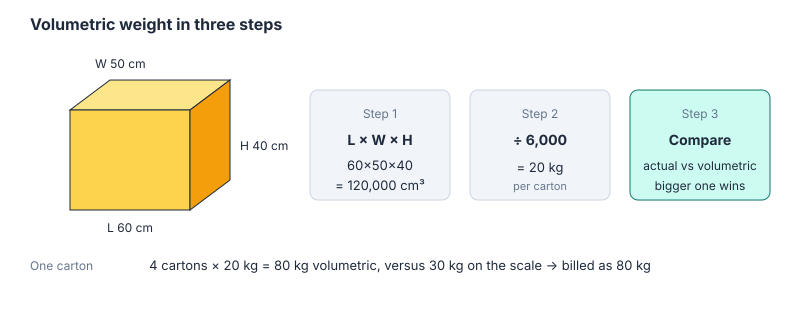

Guide
Chargeable Weight: Why Your Cargo "Weighs" More Than the Scale Says
Actual weight, volumetric weight and the number that actually decides your bill.
Actual weight, volumetric weight and the number that actually decides your bill.
Airlines sell space on an aircraft, and space is limited by both weight and volume. A box of feathers can fill a hold long before it becomes heavy. To charge fairly for both, air cargo uses chargeable weight: the greater of the actual (gross) weight and the volumetric weight.
The standard international convention treats 6,000 cubic centimetres as 1 kg. For each package, multiply length × width × height in centimetres, divide by 6,000 and you have its volumetric weight in kilograms. Add all packages together and compare the total with the real weight on the scale. Whichever is higher is the chargeable weight.

A consignment of 4 cartons, each 60 × 50 × 40 cm, with a total scale weight of 30 kg.
| Item | Calculation | Result |
|---|---|---|
| Volume of one carton | 60 × 50 × 40 | 120,000 cm³ |
| Volumetric weight per carton | 120,000 ÷ 6,000 | 20 kg |
| Total volumetric weight | 20 × 4 | 80 kg |
| Actual weight | from scale | 30 kg |
| Chargeable weight | higher of the two | 80 kg |
The shipment weighs 30 kg but is billed as 80 kg. If your supplier's freight invoice is based on this figure, the warehouse may also record it, so use the right number when estimating.
Storage tariffs have weight cut-offs. In our Gerry'sDnata general cargo calculator, cargo up to 50 kg is charged a flat daily amount, while cargo above 50 kg is charged per kilogram per day. For a 30 kg shipment cleared on day 5 the rent is Rs. 1,230 × 2 days = Rs. 2,460. At 80 kg, cleared on the same day, the rent is Rs. 31 × 80 × 2 days = Rs. 4,960, and handling moves from Rs. 4,269 to Rs. 5,431. So one set of cartons can cost very different amounts depending on which weight the warehouse records.
A single wooden crate of machine parts: 50 × 40 × 30 cm = 60,000 cm³, so volumetric weight is 10 kg, but the crate weighs 85 kg on the scale. The chargeable weight is the actual 85 kg, because it is higher.
Five cartons, each 45 × 35 × 30 cm, with a total scale weight of 32 kg. One carton is 47,250 cm³, which is 7.875 kg volumetric. Five cartons make 39.375 kg. This is higher than 32 kg, so the chargeable weight is 39.375 kg. Airlines commonly round chargeable weight up to the next half kilogram, giving 39.5 kg. Ask your forwarder which rounding rule applies.
It is the standard for most air freight, though some carriers use different divisors for special services such as express. Check the airline or forwarder's terms.
Usually the weight recorded on the airway bill and at receipt. Confirm this with your agent.
Duty is based on the customs value and the declared goods, not on chargeable weight, though freight cost forms part of the assessed value in many cases.
Measure the longest points of each package, including any pallet or outer protection, in centimetres.
No. It is the greater of the two, so it is never lower than the scale weight.